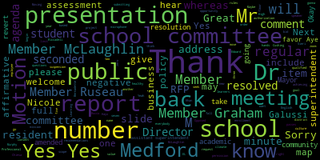
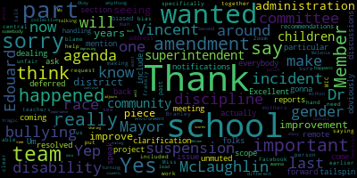
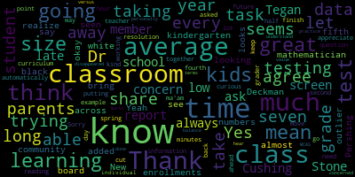

[SPEAKER_10]: Aye.
[Lungo-Koehn]: Opposed?
[SPEAKER_10]: Yes.
[Ruseau]: Member Russo. Just not for this particular one, but I do believe we'll have to take roll calls for everything with a member online.
[Lungo-Koehn]: Yes, yes, yes. Roll call vote, please.
[Ruseau]: Member Graham.
[SPEAKER_10]: Yes.
[Ruseau]: Member Hayes. Yes. Member Kretz.
[McLaughlin]: Yes. Member McLaughlin.
[Lungo-Koehn]: Member McLaughlin, are you on?
[McLaughlin]: Yes, now I am. They unmuted me. Yes.
[Ruseau]: Thanks. Member Stone. Yes. Member Stone, yes.
[Lungo-Koehn]: Yes, 70 affirmatives are in the negative consent agenda passes. Number six, report of subcommittees. There are none. Number seven, report of superintendent. Superintendent update and comments. Dr. Maurice Edwards.
[Edouard-Vincent]: Good evening. I would like to congratulate our girls soccer team on winning the GBL title, with a record of 13 and five, as well as the Mustang middle school cross country team for also winning the GBL title. Additionally, I must congratulate senior Anna Casey of the cross country team who won the girls GBL championship and was undefeated in the GBL in her four years of competition. What an accomplishment. Congratulations, Anna Casey. While we are on the subject of sports, yes, let's give her a round of applause. While we are on the subject of sports, I would also like to congratulate sophomore Brianna Cerullo, who is only the third female to play for the Mustang football team. At a recent junior varsity game against Somerville, Brianna broke the glass ceiling as she scored a touchdown for the Mustangs. She is the first female to accomplish this feat. Brianna plays the running back and place kicker positions. Fantastic job, Brianna. Speaking of football, please don't forget to purchase your tickets to Medford's Thanksgiving Day football game at Fenway Park, which will be played Tuesday, November 22nd at 7.30 p.m. Another reminder, the Thanksgiving pep rally will be held prior to the game on Tuesday in the high school gym. Special commemorative T-shirts, hats and sweatshirts will be available for purchase in the athletic office and the main office. This is an exciting venture for the Mustang community. So let's go Mustangs. This coming November 11th is Veterans Day. And on behalf of Jeremy Johns, Director of Veteran Services, and Dr. Nicole Chieser, Director of Humanities, I would like to thank the 15 veterans who came to the high school and visited 37 classrooms last Thursday to speak to our students. Veterans Day honors all US veterans for their patriotism, love of country, and their willingness to serve for the common good. I personally know this as one of my brothers made the military his career. In addition, one of our own principals, Captain Michael Downs, also served honorably, and many of our teachers and staff have done the same. We must never forget our veterans and the sacrifices that they made to keep America free. Thank you. I want to take this moment to congratulate a Mustang, Junior Thea Cruz, who currently is an Italian IV student. She won the Embassy of Italy, Italian Cultural Institute of Washington's nationwide contest for students of the Italian language in the United States. Students were tasked with creating a literary form called erasure poetry, tied to Italian artist, Emilio Isgro. This type of poetry erases words and reads the remaining words as a new poem. Both content and the visual aspect were taken into consideration by the judges. He was one of three winners in the high school category. She used Giacomo Pucci's famous aria, Che Gelida Manina, from opera La Boheme, as a foundation for her poem. Thea received a medal of merit and a scholarship of $150. Congratulations, Thea. I would also like to remind everyone to please not forget, don't forget to check our district website for the first edition of the new Fine Arts in Performing Arts newsletter called Color in Courts. It's initiated by our newly appointed Fine Arts and Performing Arts Coordinators, Ms. Suzanne Fee and Haley Rello. It highlights the creativity in our students and our school community. It also includes a calendar of upcoming events and performances. Don't miss it. November is Native American Heritage Month. which reminds all Americans to remember the important contributions of indigenous peoples, honor their histories, and advocate for solutions to the struggles they still face today. I would like to share a few facts about our Native Americans. They were not granted citizenship until 1924, after Congress enacted the Indian Citizenship Act. The first American Indian Day was held in New York in 1916, and National Native American Heritage Month became official under former President George H. W. Bush, who proclaimed it for the month of November in 1990. There are currently 574 different federally recognized Native American tribes. Massachusetts is home to two tribes, the Mashpee Wampanoag tribe and the Wampanoag tribe of Gay Head. An important reminder from Chief Massasoit, the leader of the Wampanoag tribe, He lived from 1580 to 1661. And he said, what is this you call property? It cannot be the earth, for the land is our mother, nourishing all of her children, beasts, birds, fish, and all men. The woods, the streams, everything on it belongs to everybody and is for the use of all. How can one person say it only belongs to them. Let us all take the time to celebrate the important contributions of our nation's first peoples. There are a few key upcoming events happening this week. and next. Tomorrow, November 8th is election day. There will be no school in a district for students. Teachers and staff will be participating in professional development. Most of our school's PTOs will be hosting bake sales. So please support them in this effort. Wednesday, November 9th, the vocational school will be hosting their advisory meeting from six to 8 p.m. Friday, November 11th is Veterans Day, and in observance, there will be no school for students and staff. Thursday, November 17th, Friday, November 18th, and Saturday, November 19th, Medford's own Drama Club presents the importance of being earnest. That play will be taking place in the Caron Theater. And on Friday, November 18th, Medford's own Medford Family Network brings back our Family Fun Fridays. Those events will take place in our high school gym from 4.30 to 7.30 p.m. on Fridays. Our next school committee meeting is Monday, November 21st. Thank you.
[Lungo-Koehn]: Thank you, Dr. Edward-Vincent. I'd like to acknowledge our student representative. Sorry, I missed you, Dominico Bruno. Thank you for being here. Next up, we have number two report on labor relations. Mr. David Murphy, assistant superintendent of finance and operations.
[Murphy]: It's America. Members of the committee. As we discussed an executive session earlier this evening. The districts of 5. Current settlements like the party agreements with 5 of our units are currently in the process of being implemented we The we paid out the FY 22 retroactive payments in the most recent payroll disbursement, and I anticipate at this point that the FY 23 retroactive payments for those five bargaining units will be implemented not in the pay cycle that we're currently in meeting this week but in the following one which will be the week of Thanksgiving. That's where we are with those. And with respect to our ongoing discussions with the Medford Teachers Association, as the committee and the community are aware, we did reach a tentative agreement with that unit on October 23rd. That agreement was announced here at the school committee on October 17th. On October 24th, the MTA notified us that they had failed to receive sufficient number of votes in their membership to ratify that agreement. from the district's perspective, that agreement is still in place, and we're grateful to the MTA for the ongoing discussions that we've had, and I anticipate we'll be meeting with them in the near future, and it's certainly our hope that there'll be a second vote in the near future. It's a short update tonight, because those discussions are ongoing, and there's not a lot that's changed since we last met, but if you have questions, I'm more than happy to answer. questions I'm more than happy. Thank you.
[Lungo-Koehn]: Thank you, Mr. Murphy. Number three we have a report on EL scholarship centering relationships equity and access for teachers of English learners project. Create, Mr. Politics era, director of English learners.
[Teixeira]: Good evening everyone. through a partnership with UMass Boston's Applied Linguistics Department. They applied for a grant with the US Department of Education and we were supportive of that and talked about how we would use that grant for the Medford Public Schools. And what this would allow us to do is provide basically a free half of a master's degree and applied linguistics for teachers and paraprofessionals who already possess like a bachelor's degree going into a master's program. And what this would allow us to do is increase our capacity for not only hiring teachers to work with English learners, but it would also give us the ability to have content teachers, not only be duly certified in their content in EL, but they would have all of the theory for second language acquisition as part of what they could bring to the classroom every day. We will be starting this program and this is the first that it's been publicized in the district. So we'll be working to recruit teachers. We have teachers and paraprofessionals. We have 15 slots available and the classes would begin in January. These teachers would for to get their five core classes completed as part of their master's program. And once they complete those five courses, they're eligible for ESL certification. And then they can continue on in the program. They can take advantage of Medford's tuition reimbursement. It wouldn't cover the entire remaining portion of the master's degree, but it would pay for a chunk of it as well. This would be available to elementary, middle, and high school teachers looking to obtain this additional master's degree and certification. And then with that, there's coaching that's embedded in this for family and community outreach, for providing professional development for other teachers in the buildings that they're currently working on. And they'll be doing that as a cohort throughout the process of their program. Any questions on that part? The second news, which I just added onto this is, as you know, we have a partnership with Lesley University for elementary elementary teachers or teacher seeking elementary certification, they go through a master's program to get their gen ed in grades one through six, they do a year long internship in the EL department. in any elementary school, typically a newcomer's classroom, but sometimes that doesn't work. And we do a balance of the gen ed classroom and EL pullout. And Leslie is extending this program into middle and high school for secondary. So teachers that are seeking to get their master's degree in math, the humanities, can also do an add-on EL license if they do this year-long internship at the secondary level. And so Medford's also working with them to establish that and get some candidates in the district for that program as well.
[Ruseau]: No questions? Member Roussell? I would just like to thank you for the effort to find all this money. Free money, from our perspective, is the best kind. So thank you. And do you have any sense yet on how many teachers will be interested? Do you think that you will have to deal with too many people applying?
[Teixeira]: I don't, you know, and so that is an interesting question because there are other cohorts that will be, that will begin like in September. And, you know, I'll stay in touch if we can't, you know, if they don't, if other districts aren't filling them, you know, to see if we can jump in on that as well. So this happened because I was looking for interns to come do their student teaching in Medford. through meeting the director and going through that. And I brought her down to the McGlynn Middle School to show her the program and program design. And that's when she started talking about this opportunity that they were applying for. And I don't know what like years two, three and four looked like for them, but Medford would definitely be a part of that.
[McLaughlin]: Excellent, thank you.
[Lungo-Koehn]: Is there a limit to the pre-half master's degree?
[Teixeira]: So it's 15 people, 15 teachers and paraprofessionals for this January cohort, but they will have other cohorts throughout the school year.
[Lungo-Koehn]: Great, thank you.
[Teixeira]: Thank you.
[Lungo-Koehn]: Moving right along. Number four, report on enrollment. Dr. Peter Cushing, assistant superintendent of enrichment and innovation. I know a report was left in our desks.
[Cushing]: The report that I gave you prior to the meeting, I just wanted to make sure that you had the third page. I wasn't sure if that was as part of the submission earlier, but presently we have 1,982 students at our elementary level. So we are also showing 924 students at our middle school level. and 1,256 students for a grand total of 4,162 students across the district. You can see the breakdowns throughout the entire district per classroom, per grade. And you can also see the breakdown of middle schools for each side at each school and at our vocational and med high school and career technical education with the third page breaking down each individual program with their current enrollments in grades 10, 11, 12, as the exploratory programs are still for the freshmen. Currently there are 268 students in CT exploratory out of a class of 342 students. Also just want to call your attention on the last page that we've had 286 students tested in the EL department. 117 of those are kindergarten students who have been tested. And so right now we're looking at approximately 134 students out of that testing who received services and are now part of our EL program. So I wanted to provide that information to you. I want to thank him miles for helping for building this report and pulling the requisite information and for all the teachers and educators who are working as we've had. You know students returning to us this year.
[Ruseau]: And the result. Thank you. I was just looking at last year's numbers, at least according to the DESE report, and we had 39, 37. So that's a good increase. I know that we had a drop. I haven't gone back and looked further. So is there, I mean, I haven't looked through this report since it's just right here. Is there a particular area where we're seeing a lot of, I mean, that's what, nearly 200 students?
[Cushing]: We're seeing students returning to us from private schools, from charter schools. As you can see, from the preliminary charter and other regional vocational charter and other public school numbers, we wanna try to recruit those students back to us even more so, but we are seeing those students return to us and we are seeing an influx of students from other nations.
[SPEAKER_03]: Okay, great, thank you.
[Lungo-Koehn]: member Graham.
[Graham]: Can you tell us that I'm looking at the charter numbers for enrollment this year so 3.95 is our charter school enrollment and I think that amounts to 7 or 8 million dollars of tuition going out to those charter schools has that compared to your past the 3.95 do you know sorry could.
[Cushing]: critical part of your question.
[Graham]: How does the 395 compare to years past?
[Cushing]: That's staying, that's so that's staying about average with the exception if you'll notice in grades one, two, and three those numbers are higher than the later years and The inference is that during the pandemic, people may have chosen different options based on how other schools may have operated than traditional public schools. And so now it's our job to try to recruit those students back.
[Lungo-Koehn]: Thank you.
[Ruseau]: Mayor.
[Lungo-Koehn]: Member Russo.
[Ruseau]: Just on that point, I believe we were at our charter cap. So being steady makes sense because we can't exceed the charter cap. although I thought the charter cap might be a few students over 395 actually, so that would be surprising and lovely if we were under the cap. Obviously, the smaller the number, the better for us, but that would explain why we have been steady. I can't quickly find the charter numbers, because it's the DESE website. Enough said on that, thank you.
[Mustone]: Yes, member Stone. Thank you for the report, Dr. Cushing. And I don't know if it's too late to ask if we could share this on the screen just because the class sizes are so low on average in every school in every grade that I know that's always a concern over the years for parents class. I know when Tegan was in kindergarten, it was 27 and then a fifth class was added to bring it down. But I mean, looking at this, and I'm not a mathematician, it looks like almost the average class size is 20 across the board. Would you say that's the average class size? Yeah, so I just, I think that's great for, I don't think I've seen it in black and white to realize how great that is for a classroom. I know Deckman has 19, so I didn't know if he was the outlier, but that seems like it's the average, so thank you for that. But this is a great, I mean, to share with, community to see those numbers. Thank you, Dr. Pershing.
[Cushing]: Nope, I can share it right now.
[Lungo-Koehn]: And is the new EL enrollment numbers, the 134, is that in addition to, or is that's finalized, correct? That's the current numbers that fluctuated this year.
[Cushing]: That's for this year. Yeah. New enrollments.
[Mustone]: New enrollments this year, okay.
[Cushing]: And while Mr. Teixeira will give a further report about this later in the year, I wanted to call attention to 286 students tested. That's about one to three hours per test based upon a family's home language survey. So us receiving those students, greeting them into the district, entering them in. Some students may then never join the district because they may move to somewhere else in Massachusetts, the United States, may return back to their home country.
[McLaughlin]: Yep, we will.
[Ruseau]: Mayor, one last thing. Thank you. This is a new format of this report and I just want to say bravo because it's very nicely done. It's
[Cushing]: All kudos need to go to Kim Miles, our data specialist on that.
[Ruseau]: Please make sure she receives our thank you, because this is excellent. Thank you.
[Lungo-Koehn]: Yeah. Great. Maybe you could just leave it up for a little while, Dr. Boshini, if there's no more questions. And then we'll go on to number five, because I know we have public participation. All right. Thank you. Thank you. Thank you. Report on NWEA map fall results 2022. Ms. Suzanne Galluzzi, assistant superintendent Academics and Instruction, Dr. Bernadette Riccadeli, Director of Professional Learning and Student Assessment, Dr. Nicole Chiesa, Director of Humanities, Dr. Nisbiz Khan, Director of Mathematics, and Mr. Rocco Sieri, Director of Science.
[Galusi]: So good evening, Madam Mayor and members of the School Committee. The Director of Professional Learning and Student Assessment, Bernadette Bercudelli, and myself are here to present on the MWCA Math report for the school year. The Curriculum Directors, Dr. Nicole Piazza, Director of Communities, Brock Ossiri, Director of Science, and Isaac Kahn, Director of Math, are also here to answer questions at the end of the presentation. But I did want to just take this time to thank The academic team for the amount of hours they put into this presentation, which has been many. And at this time, it's my pleasure to pass it off to Dr. Riccadeli to start.
[Ricciardelli]: Good evening, Madam Mayor, Superintendent and members of the Metro School Committee. It's so nice to see you here tonight and I'm very happy to share our thoughts and our findings and our observations on the most recent administration of the NWEA MAP test that occurred this past fall in September. I know that there have been several presentations, there were a few presentations last year, so you have some idea as to the big picture as to what the test is about. For the benefit of the people who did not hear those presentations, some of this will be a review, but I'll try not to spend too much time on that part of it. I just want to add that Faiza Khan will be available on Zoom this evening. She was not able to be here. But as Suzanne Glusi said, Rocco, Rocco Sieri, and Nicole Giza are here to join us. So with regard to the agenda, the agenda, we're gonna go over the test design. So that's, we may see a little bit of a review. We're gonna go over the timeline, the approximate testing of the timeline, excuse me, the approximate timing of the tests. The test sessions, we're going to go over sample educator reports, we're going to go over the data utilization so how are we going to use this data moving forward. And what we're going to do in our continued work. here in the district, and then lastly, in your packet, you'll see an appendix. Our intent is not to go over each one of those charts in the appendix, but rather to leave time at the end for you to ask questions if you have questions about that data, because it is voluminous, and I want you to know that's just a little piece of what is available to us. So I think the challenge for us as a team, and we really did work as a team, was to decide what data to bring forward, because there was so much. We looked back at some of the questions that this body asked the last time there was a presentation, and we tried to frame our presentation around answering your questions. So we hope that we're able to do that this evening. Moving on to, here we have the next slide. As you know, this is a computer adaptive test. It's created by the Northwest Evaluation Association. That's what NWEA stands for. and in Medford, we take it three times a year. There are some districts that opt to take it two times a year, we opt three. I think the most important data that is yielded from this test is the test that's provided to teachers in the classroom. It's important on the district level, because we can glean a lot, but I think on the classroom level, they really can see where their students are in relationship to the other students in the class, They can look at the data, they can look at the domains, and they can pick up the specific areas where there needs to be some adaptation to meet the needs of students. All right, so what is MAP? I've kind of given you an overview of it. We know it's an adaptive test. We know that it's a test that students take. It gets progressively harder. So the same students in a classroom are progressing on that test in a different way. So if the student gets a question correct, it goes on to another question that is more difficult. So that's what we mean by it is adaptive. It measures students, what they know regardless of their, their age or their grade level, it measures growth over time, and it allows us to track those students in a good way to see where they are growing. It's based on a RIT score. So I know that last year when the results were presented to you, the RIT score came up. The RIT score is a, it's a stable scale score, excuse me, it's a stable score. Like feet and inches, marking height on the growth chart, it shows how tall at different points in time a student is. The higher the RIT score, the more achievement the student has attained. I think what's important, and if you were able to take a look at the charts in your appendix, you will notice that our RIT scores, when we look at them compared to the national norm, our scores are actually at the norm or higher with the exception of one or two areas we did see grade seven math where it was slightly below. So it's a nice thing to see that we are, again, at the norm or above. So going back to the previous slide, there is a picture of a normal curve. And for those people who have studied statistics, it might look somewhat familiar. And if it doesn't, it's okay because it's a really simple idea. So in a normal curve, that midpoint line is your mean, median, and mode. And for the MAP test itself, the results are often reported out in terms of an SD or standard deviation. So the dark blue color that you can see on this chart represents one standard deviation away from that mean. So when you look at your charts and the SD or the standard deviation says 12, that means there are 12 points. So let me back up. 12 points from the mean in a positive direction moving forward and 12 points in a reverse direction would encompass 68% of the students. Let me try to make that a little bit more clear. And I only do this because the SD is recorded on each one of these charts. So let's imagine on the chart that that middle line was a 75, that the average score of a student was a 75. And the standard deviation was a 10. So 10 points above 75 is 85, 10 points below 75 is 65. So what that would mean is that 68%, which is a standard in statistics, 68% of the scores fall within that standard deviation. As we go out on the arms of that normal curve, you go to a second standard deviation, it goes a little further. So you would go up another 10 points up to 95, you would go down 10 points to 55, and that would account for 98% of your scores. So why is this important? It really is just important because the standard deviation tells us how spread out the scores are. If you have a short or a small standard deviation, It means that the scores within a classroom are very compact, they're very close to each other. When the standard deviation is wide, that means there's a lot of variation in the classroom scores. So what would this mean to a teacher? Well, the teacher would see his or her 25, 20 students. and could see that the scores are spread out. But I think, you know, for us, we're analyzing these. It is interesting and useful just to see how much a teacher needs to differentiate if that standard deviation is broad. Moving on to the next timeline. We have identified the times this year when we are testing students. So we have a calendar for elementary, we have a calendar for secondary. So you will see that the first testing window occurred in September, the second testing window occurs in January, and the third testing window occurs between April and May. Moving on to the next slide, this is a question that we wanted to answer because it came up. We had a question about this last year. So we wanted to take a look at how long it takes students to complete this task. So we were able to get these numbers. I'll first explain the number to the left. So in the chart that you're looking at under math, 31 represents the minutes that a student in kindergarten, on average, according to NWEA map, that organization spends on the test, so 31 minutes. The number in parentheses is the number that we calculated based on a cross-section of K students taking the test in the district this fall. So it took them 18 minutes. So they actually calculate the time that the student is logged in and is taking the test. So we took that and we looked at a cross-section of that, and we came up with 18 minutes. So for each one of these numbers, you can see the number not in the parentheses is the number that is the average based on what NWEA puts out. The number in parentheses is the number based on our look at the login time for students. The login time does not include the time that a student gets onto the device It's only the time that they're locked on. But we wanted to provide that to you.
[Galusi]: I was going to say, I think it's also important to note that this is the average time, right, in the cross-section, across the district. So there are students that are taking this class maybe 18 minutes and in more. This is the average.
[Mustone]: So does it automatically they let the kids I mean 65 minutes seems like a long time for a fourth grader under reading to be working on a test. So it doesn't cut them off. It lets them go for as long as they need to.
[Galusi]: Test because it's adaptive, it will keep them going until they get to the level where they know that just right level of where the student achievement and growth is at. So that if the students keep answering one correctly and then answering one wrong, answering one correctly might take a little bit longer. Additionally, it may, I mean, it also may be that this is representative of more than one sitting. This is an accumulation of how long it took me to take the test. Thank you.
[Ricciardelli]: So with regard to range, I found this to be very interesting. So what you're seeing up there in parentheses is the average, as Mr. Lucy said. But I noticed that the range was vast. So for example, grade five reading in one classroom, there was a range of 26 minutes to 177 minutes. So a great range. In another classroom, this was the science test. It was a range of 22 minutes to 111 minutes. So you are seeing the mean, the average, but the range is vast. All right.
[SPEAKER_03]: Mayor?
[Ruseau]: Sorry. Member Russo. Since you're bringing up the reading, you know, and in The samples that we have here, I'm looking at them and I'm wondering, considering the state of reading in the United States, it doesn't surprise me that a student took two hours or more to do this if they are frankly a typical second grade reader or third grade reader, frankly. So does this test understand that a vast number of students aren't able to really read at grade level? Or is there an expectation that the students can? I'm just really confused by scoring. It's about what they know. It's not a reading test. It's about what they know. Well, how do you answer what you know if the student has to read something for which they're not capable of reading? They're gonna get the answer wrong if they ever get through the question. I'm just confused how this can understand that.
[Ricciardelli]: Well, hopefully I understood everything. So I think going back to the standard deviation, we have a large standard deviation, it is confirming what we can see with these large variations. The point being that a teacher needs to differentiate to the degree to which many of them you know, no, and then the map test confirms that. So there is a wide variation. So with those swings that I just said, that wide range, that is not, that wasn't typical. I'm giving you an outlier just to show you what it was. I think the averages capture that, and, you know, I guess we could figure out what CSD, the standard deviation was for that, but not that anyone really, wants to know that, but the bottom line is, yes, there is a wide variation and teachers need to differentiate, which is not easy.
[Galusi]: We're going to get a little bit further in the report when we talk about some of the teacher reports. I think we'll address the question that you're asking, but I also need to... Dr. Riccobelli mentioned it, but I think it's very crucial that point of data at the teacher and school level. The whole point of this is the progress monitoring. And so all of those, like, nuanced pieces and the students that took a very long time, there's a story there. We don't know what's standing here at the podium, but that's part of what the principals, the school leaders, the curriculum directors uncover so that they can build the students.
[Ruseau]: Just one, forgive me if I've already said this, but the reports that the teachers have are student specific.
[Ricciardelli]: Yes.
[Ruseau]: So that's right.
[Ricciardelli]: Ms. Galussi is going to go over some of the reports. And there are many, many reports. All right, I'm just going to move because I know- Can I ask one question?
[Mustone]: Sorry. Yes, ma'am. Thank you. For the testing times, I think, and I appreciate a lot of this information was what was asked in the resolution back in the spring. So thank you for putting this all together. But I think what that question was trying to get at is more, how much of time and learning is this taking away? from the classroom. So for example, you know, if a classroom, a second grade classroom has, you know, 12 kids who finish in a half an hour and then has seven more that keep going, the teacher's not going to move ahead with the curriculum that day when she knows that seven kids are not going to be able to be with her. So I'm curious if there's a way at some point in the future to get data more on kind of how much time and learning this takes from the classroom, not just how much individual students or the average student is, you know, to take the test.
[Ricciardelli]: So what I would say is, you know, having been in the classroom myself, it's a, it's a, an ongoing problem is getting the students to finish any test at the same time. It just doesn't, it doesn't happen. So creating those learning opportunities that a student can do while the other students are finishing. I mean, it's easier said than done. It's not easy to do. But I think as you get to know your students, you're better able to do that. And this is what the job of the teacher is not easy. And it is creating those late learning opportunities when they present themselves like this. So when the students finish, the students do not have free time. The teachers are giving them assignments to work on.
[Galusi]: I don't know if you can. No, I mean, I think it looks different. Ms.
[Lungo-Koehn]: Galussi, do you mind if you use the microphone so everybody can hear?
[Galusi]: Sorry, thanks. Not at all. I was just going to say it looks different in every classroom and at every grade level. And so if you want specifics around what that looks like, then that's something that we can look into. But I would say that there's a variety of ways that this looks. I mean, if I'm just looking at the elementary level and it's literacy block, there's a reason why there's two literacy blocks. One is for tier one and one is for the wind block. And during that wind block is a great time to catch students up and have students finish an assessment while the others are working on individual work or with the teacher. There's numerous ways that it's not stopping learning and that everyone is getting what they need. I'm going to have to reiterate again the importance of this test is for the progress monitoring piece. Teachers need the documentation in terms of making sure that students are getting what they need. And I'll show a little bit of the reports that help them do that. But having data informed discussions to adjust practice is needed.
[Mustone]: I agree. I just, you know, I know that I personally I hear from parents who are concerned about how much testing is being done between the MCAS, this test, practice and tasks. And so just in terms of being able to understand, trying to balance what is the value of the task versus how much time it's taking away from time learning. I do. I agree with you about the data.
[Galusi]: I know, I know that. So just a reminder for the people like watching or people that are here. I mean, for kindergarten, first grade and second grade, it's a mandate. So the Department of Education, we have to have a screener as part of the dyslexia guidelines. And so that does that for us. So we have to, we have to have some right. Thank you.
[SPEAKER_00]: I just wanted to add one thing as well. I'm sorry. Um, when we think about assessments, we're also to your point, um, we're also thinking about what are we taking away in terms of assessments? So, you know, what does this replace? Um, and so that we all have universal assessments, but we're not, you know, you're are removing some things as well, because we do, we are really sensitive to, to your point with instruction. So with that is something that we've looked at school to school. grade to grade as well.
[Ricciardelli]: All right, so moving on to the middle and the high school grades, you will notice that there are just the NWEA forms that are listed. I'll be honest with you, it was a painstaking process to go through and calculate the minutes because they had to be done individually, and it took many, many hours to do that. So I will eventually get to the upper grades, and that might be something that you get a little bit later. The second reporting of results, but doing a quick scan, I didn't see the wide variation that I saw in the elementary level. So again, 59 minutes, 61 minutes, 53 minutes, and so on. The science are lower. On the secondary level, the classes are 56 minutes in length. So it's possible in some cases it went a little bit over that. And on the middle school level, I believe the classes are 43. Someone can correct me if I'm wrong. I'm wrong on that. So, you know, they may have to lose two minutes to part of some classes to that.
[Galusi]: Okay, so the next section is about the educator reports. So this opening slide here just provides you with the percentile colors. So these are seen in the reports that the teachers can access, but they're also seen in reports that go home to parents and caregivers. So this just gives you the spectrum so that you can see blue reading from exceeding average achievement and growth to low achievement. The first report that we're going to talk about, I kind of scheduled these reports so that we're talking from large school-based down to student sector reports. So this is a school-wide report that the principals and department heads have access to. So these show the achievement scores at each grade level. So here, you will see a representation of one of our middle about this report, it gives just like a bird's-eye view of each of the levels across the grade. But they also are highlighted so that if the teacher or the administrator puts on the color bar, it would bring up a snapshot of what you see below, which is the detailed list of student levels, their grit scores, and give just a little bit of a broad application to the scoring. That does not really go into much detail, but just gives a broad overview. The next slide is a class breakdown. So this shows you, teachers can use this. There's two ways. They can use this by average grade score, but they can also look at the instructional area. I know that a lot of our curriculum directors utilize this, a lot of classroom teachers utilize this. So if you see the column on the left, you can have all of the standards for learning domains populated and then it breaks your class down into RIT scores so that you can see where students are in terms of, this is the differentiation piece that Dr. Scrum's, yeah.
[Lungo-Koehn]: Just the microphone, sorry.
[Galusi]: Oh.
[Lungo-Koehn]: Member McLaughlin can't hear you.
[Galusi]: Oh, I'm so sorry. So that means Zoom can't hear you. Okay, okay. Thanks. I should have remembered for some. All I was saying, so member McLaughlin, the column on the left has the domain or the standard which was represented on the test. The rest of it shows the breakdown by RIT score so that teachers can see in terms of like differentiating based on that standard where the students fall in their level of understanding. So it helps a little bit more as this is again where some of like the standard deviation piece comes in as well as the RIT score comes in so that when you are planning for lessons for where students are and what scaffolds and supports have to be in place this is just a report that will help teachers with their groupings completed. Let me know if you have any questions as I go. The next report The next report can be classroom as well as individual student. This is one of my favorite reports. This is the quadrant report for achievement and growth. So it gives you both in one report. So you can see that it's broken up into quadrants of, in the far left where it's orange, that's students. So the little specks that you see on there, those represent students. If there are two different icons, it can represent more than one test at a time. So at the elementary level, if I want to see, if I'm teaching fifth grade and I want to see how my students did in all three tests, I'll check off the box to populate all three. There'll be a different icon for each test and I can see where the students fell in relation to their achievement and their growth. If you hit, everything's hyperlinked, if you hit one of those icons for the test, it also will bring you to a detailed report for each student. And below this is also a class breakout of how the students, what their growth was, what their achievement level was, and their percentile. So this is a nice way to group students. Growth is, and then achievement goes horizontally. And so teachers can, if they want to, move the access to kind of, but right now it's set on 50% so you can see where the students, where the students are. All right, moving on. This is another report that gives a classroom view as well as a detailed student view. So this is called the class report. It breaks the classroom by that color coding scale that you saw. so that each teacher can see the overall view of the class, while at the same time also getting individualized student data for each student in the class below. That student data, I know it's really small to see, but it has their RIT score, it has their percentile, it shows them how students were in relation to the national norms, it shows students in how they were in relation to the grade level their peers within their own class. And so the teachers can really use this to get a gauge on how the students are doing. This was an upper level example. So you can also see the breakdown by domain and by test below where it talks about, literature, informational text, vocabulary. So it will give each subsection of the test, not the overall view of the English test. And then the next one is really narrowed down to students. This is student growth summary. So these reports, if you don't mind advancing to the next slide, these reports, The information is important once students actually have data in there to show growth. So we're not going to see this for kindergarten students, we're not going to see this for students that are new to the district, but this projects their growth. The orange little diamond is what math projects their growth to be. And then the blue column is where they performed in relation to their projected growth. This allows teachers to see how students are doing on a trajectory. And it also provides information about where they land in terms of relation to their peers and more referenced nationally. And then the last report, which is one of my favorite reports from, this is the last one. And I have to say that we haven't even touched all the reports. It's almost overwhelming for educators, but these are some of the ones that are the most applicable. This is the student profile. This is a snapshot of the students for every test that they've taken for math. This shows you this particular one. If you can see the top bar, see how they have mathematics, reading and science. But this one I wanted to highlight because you can see how this student performed differently in each grade, in each test. So for math, they were yellow, which is kind of like in the average range, but a little slightly approaching the average norm. Where at blue for reading, this student is exceeding the norm. And for science, the student is better than average, but not exceeding. So when you click on those colored tabs at the top, it gives you a breakdown within that box and below based on domain and based on their growth for their achievement and their, their achievement growth, excuse me, their achievement and their growth. So you can see really quickly, I just wanna draw your eye to that middle column that says instructional areas. Now, because the math was the one that was highlighted, you can see the domains right there for the math test. So for number and operations, this student struggled a little bit. A 75 is below the average RIT score. But you can also see, because it tells you in the yellow up top what the range is for the RIT score. And you can see that math has identified number and operations as an area of focus for the student. You can also see that below operations and algebraic thinking are a strength to the student above what the scaled RIT score should be. So this is information. Now, if you clicked on that, it would bring you to the test. and to the questions. And so teachers can really utilize this data to see that this student, on the mark for measurement and data, on the mark for geometry, above for operations and algebraic thinking, but something's going on with numbers and operations, and let's see what it is so that we can work to build in some supports for where the gaps are.
[Lungo-Koehn]: Thank you. I think we have another 40-something slides, so we're gonna give you a break. Member Graham?
[Graham]: Thank you. We're going to give you a little break here. I'd like to make a motion to suspend the rules and take items eight and 10 out of order.
[Lungo-Koehn]: Motion for suspension of the rules by Member Graham, seconded by Member Rousseau.
[Ruseau]: Member Graham?
[Lungo-Koehn]: Yes.
[Ruseau]: Member Hayes?
[Lungo-Koehn]: Yes.
[Ruseau]: Okay. Yes. Member McLaughlin? Yes. Member McStone? Member Rousseau, yes. Mayor Longo, current.
[Lungo-Koehn]: Yes, 70 affirmative, zero in the negative. We're gonna move on to number eight, and then we'll get back to the presentation. Presentations of the public not to begin before 7 p.m., regular meetings of the school committee include this presentations of the public agenda item to give any resident the opportunity to place a presentation before the school committee. A resident may only present once at a meeting. These presentations are an opportunity for the public to make a presentation to the committee, but are not opportunities for dialogue with the committee. If one or more members committee wishes to have a conversation about the topic presented, a member may request that the item be added to a subsequent regular meeting. The details for submitting the presentation can be found within the policy BEDH, public comment and presentations of the public. So to the policy, any resident in the audience may give permission, be given permission to speak once on any item on the agenda for up to three minutes. The speaker is expected to keep their comments To the item on the agenda speaker must begin their comments by providing their full name and full met for the street dress where they reside. welcoming inclusive communities, both the value school committee and aspirational goal, we ask your help in achieving this goal and value perspective, please admit schools are exempt from this policy, the voice of our police welcome on all matters. When a non-Metro resident employee is participating in public comment or submitting a presentation publicly with their home address and identify themselves as an employee of the Metropolitan Schools. We have Ms. Nicole Friendly, parent, presentation on student discipline. Welcome.
[Branley]: Nicole Brantley, our address is on file, but needs to be omitted publicly due to our safety concerns. This is my first time speaking at a meeting, and I want to thank you all for this time. I have heard from the mayor personally, and I appreciate your story and your time, each and every one of you. Mr. Russo, you must have lost my email address because I have not heard from you. My husband and I have been lifelong Medford residents and have always been proud to be raising our family here. We both attended Method Public Schools and graduated Medford High School. There was never a second guess in sending our children to public school here in Medford. Sadly, my daughter encountered some very alarming and repetitive acts of harassment. Bullying and threats at the high school, which led to a vicious physical assault that sent her to the hospital on October 17th. I'm not here to speak specifically about her situation, but more of the broader scope of what my eyes have been open to. Safety in our schools is imperative. News reports of mass shootings that have inflicted on our most vulnerable, our innocent children are everywhere. But not until my own daughter's horror story began in June, did I ever really consider that the child sitting next to her would be such a one-on-one threat. But that is exactly what happened when she was attacked two-on-one. So many people reached out to us when news got around what happened. Sadly, many shared their own bullying stories with me. I'm sorry that they had to go through that, but I know that the apology does not have to come from me, but it should come from their bully, from their attacker, and from our school district. I have heard from countless Method public school victims of bullying in the last week. Every story has been more horrifying than the next. This is not a new issue. As a mom, I know how these mothers feel. Helpless, angry, heartbroken, and terrified to send their child back to school. I worry too about the students who don't feel comfortable going to the administration. or even to their parents or guardians to say what is happening. What about them? I was the ultra proactive mom in our situation and this violence still occurred. What is the breaking point here? What about the long-term effects of this on our victims? My daughter. At one point, at one point during the last few weeks, I realized something even more horrifying, that our daughter will carry this story with her through her whole life. One friend told me about her bully in a Method elementary school. Sorry. back when she was 11. She is now 53 years old. She asked me not to share her specific story publicly, but fear that her bully still lives in Medford. 42 years have gone by for her. 42, and she still is in fear. Our school system let her down. They let our family down and countless others. I have heard so many stories this week that bullies or aggressors that are in a fight have actually returned to school from their punishments before the victim could heal from the injuries in return. That is backwards and it needs to change.
[McLaughlin]: Thank you.
[Branley]: Not all the stories I have heard have been under your administration. Or during the time of your elected positions, but our story is and so are countless others. Although you cannot change the past. You certainly need to step up now. Medford can be the example of the school district that set the bar. Our school should be on the news for positive stories, not ones of violence. I am hoping moving forward, we could work together to actually make sure the policies we have in place are sufficient. And if so, that they are being implemented. I think it's long overdue that children see consequences for their bullying, harassing and fighting. Maybe if students know they will be held accountable and consequences are imminent, that they will think twice. Even more importantly, that no one else has to be a victim of such a crime and that students who choose to use their fists and hateful words to solve problems actually see consequences. If zero tolerance is stated as part of our Mustang way, then follow through has to be too. Actions speak louder than words and the students know it. They know it's only lip service from you right now. It is our job as the adults to set the standards for what we are willing to accept. What is allowed in our school defines the morals of the city and our community. I've done a lot of reading in the last few weeks. And in our own handbook, it says following policies, are consistent with the mission statement to set expectations for students and to offer them considerable motivation and support as a way to help them become responsible citizens. The time is now. I make a vow in front of all of you. I will help be a part of the change. Tell me what you need. Tell me what I can do. Tell me where I can sign up. Do you need more funding? Tell me who I need to contact, because I will do it. Do we need another assistant principal? The relationships we have built with the school resource officer has been a great one. Could we have maybe one more to help him try to cover multiple buildings? Help him cover multiple buildings and over 1,200 students. Can you type up a clear policy that every child actually has to read and sign every year? There's gotta be options. Can we make clear that prom, sports, homecoming, that those are privileges and they could lose them. Students need routine, they need encouragement, they need love, they need discipline, and they need a hard line. So draw the line. What are you specifically going to do? starting now. Maybe our school committee members should start walking the halls of Medford High School. Maybe you can spend some time in the cafeteria at lunch or check in on a bathroom. I wholeheartedly agree that every child has a right to a public education We have exemplary teachers in our district implementing amazing curriculum while nurturing our students to be the best they can be. If no expulsions are set forth, then we need to be able to find solutions and education plans for aggressors in an alternative school setting, especially away from the victims to ensure safety for all the students. Introducing violent bullies back into the corridors with their victim is assaulting them again. Only this time, you will be the bully. Thank you.
[Lungo-Koehn]: Thank you, Miss Brantley. I know we have an associated motion that I'll read under new business, which we move suspension of the rules for 2022-51 offered by Member Graham and Member Rousseau. Whereas the Medford School Committee unanimously approved the following resolution on 12-6-2021, whereas the school committee is committed to achieving the mission statement of the Medford Public Schools. The Medford Public Schools is a caring educational partnership of school, family, and community designed to ensure that all students are afforded a safe and healthy learning environment in which they develop the knowledge, skills, and attitudes to reach their full academic and personal potential. And whereas the effects of the pandemic have exasperated challenges in school climate and culture nationwide and here in Medford, therefore be it resolved that the Medford Public Schools will issue an RFP to perform a climate and culture assessment of Medford High School to be completed before the end of the academic year. The RFP will seek a qualified and independent vendor to conduct a survey of staff, students, and families who are part of the high school community. And be it resolved that the project scope will include recommendations to address moving forward in a manner that prioritizes a healthy school community and contends with the district's past handling of incidences that are race, gender, and bullying based. We had also resolved the recommendations will outline organizational, structural, professional development, and curriculum-based changes needed to address the findings and achieve our district-wide mission. We had further resolved that the school committee authorizes an expenditure of up to 50,000 to complete this important initiative, and that the superintendent will return to the school committee to seek authorization for additional funds should the qualified bids received at the bid opening be in excess of this authorization. and whereas the resolution was amended to include the middle schools in the scope of the assessment, now be it resolved, the administration provide a report of all actions to date to fill this resolution, including the reasons for any delay. Member Graham.
[Graham]: Thank you, Mayor. First, I want to say thank you to Ms. Branley for coming tonight. It's really hard to speak in front of a large room of people like this, and it's especially hard to deliver the remarks you just gave. I am really terribly sorry that your family is going through this, and I hope that as we navigate beyond this, that you will find what you're looking for in terms of change in the district. Having said that, regarding this motion, give me a second,
[Mustone]: Marks just disappeared.
[Graham]: When we introduced this climate and culture assessment, it was unanimously approved last fall. And it was at least in part a reaction to an incident last year. The intent of the motion was not last year was not to narrowly or exclusively address the incident itself. I will say that safety and supervision are foundational in daily activities at any school. It's reasonable to assume that any school has the resources, staff, and structures necessary to perform these basic school functions. And when the system doesn't work at these basic functions, it's reasonable to hold the system and the adults accountable for the kind of failure that we see. Separately, the point of the climate and culture assessment, for me at least, is to take a broader look at our school environment and identify what keeps us from the kind of school we want for our kids. I want to hear from an expert in the field about how we create a culture that largely avoids these kinds of issues that we find ourselves in right now. I want a system that avoids bullying, avoids contributing to the self-esteem issues we see in some kids, avoids process failures, avoids situations where kids can leave school unnoticed, and avoids the communication and PR situations we too often find ourselves in. I want to hear from an expert about how to create that culture. I expect the recommendations to be quite broad and to address everything from staffing to org structure, to curriculum, to personnel, to policy, and more. We keep circling around real solutions that do more than react to a crisis of some kind in this district. At this point, I think we need to hear from an objective party that doesn't care where you are from, who you know, or why it's always been done that way. Our kids and our city in general deserve that. Of course, I would expect discipline to be part of that assessment, but I'll say again that safety and supervision are foundational elements of any school. I don't think the district will ever provide a truly satisfying answer for all the privacy reasons that are wildly unpopular and still truly the law, but I do hope that what we can expect from our superintendent and from this committee is accountability, that we will take action and expect more of this district in the future. It's long past due that we push past the culture and change the culture of this district. It's been needed since long before my kids were a part of MPS, and one of them goes to high school next year, in fact. Our kids deserve the best we have to offer, and we need to explore every option to do so. In terms of just one other note that I want to provide to Ms. Franley, the rules and policy subcommittee has on its docket a review of our bullying policy. And hopefully that meeting will be scheduled in the next coming weeks. And when it is, we will be sure to reach out and let you know. I think there's a lot that goes on from a policy perspective that then has to be executed by the administration. And when that comes up, we'll make sure that you're aware so you can participate. But I do hope my colleagues will join me in again supporting this motion that asks for a detailed update on why this climate and culture assessment hasn't moved forward and what we are going to do to not be here again in three months or six months or a year, having this same conversation and not having done the things that are at our disposal. Thank you.
[Lungo-Koehn]: Yes, one second. Thank you, Member Graham. Member McLaughlin?
[McLaughlin]: Thank you. I'm sorry I'm remote, but I wanted to say. Thank you for folks who are coming forward to speak up. I think this is a really important issue. This was, we actually had suspension and discipline on the agenda at the last meeting. And that was deferred to have school committee members come back with some notifications about what they wanted to ask about suspension and discipline particular to reports. So we had had that on the last agenda and that hadn't happened. I just wanted to mention that because that's important. And it was one of the discussions that we had that we were gonna have that. Um and then, you know this incident happened, and everybody obviously. Was in a tailspin dealing with all of that. I also just wanted some clarification if I could on the on the section that says be it also resolved that the project scope. Will include recommendations to address past handling of incidents that are race, gender, or bullying biased. Just specifically around that, I wanted to make an amendment that included disability. So race, disability, gender, or bullying bias is the request I'm making for an amendment.
[Lungo-Koehn]: Noted, thank you, Member McLaughlin.
[Graham]: Yep, absolutely.
[Lungo-Koehn]: name and address for the record and I know we have a lot of people here and a couple hundred I think on zoom so if you could limit it to one or two minutes that'd be great Thank you.
[McLaughlin]: The MIC is not on sorry man.
[Lungo-Koehn]: It is on can you not hear it is on okay i'll we never.
[Jenny]: So you said you agreed upon the Climate and Culture RFP in December of 2021. If this most recent incident had not happened, would we have heard about it again? Would you have done anything? Because it sounds like you just pulled it out of a drawer because of this most recent incident.
[Graham]: That couldn't be further from the truth. I've been following up on it since we asked for it. And I just think it's important for the entire community to be able to hear that same update. that we committee members often get behind the scenes. So I'm hoping that the administration will have something to report to us tonight. So it took 11 months.
[Jenny]: It's November of 2022. You agreed last year.
[Branley]: So just to go on with Jenny had just said, it really does come down to accountability. If the superintendent is accountable for our schools, then why has it not been done? Please do your job. Mayor. And I need the school committee to make her accountable for her job, because here are the voters and we're gonna make you accountable for your job. Mayor, what will be the new deadline for this climate and culture report? Is there a new deadline? Was there a deadline originally?
[Lungo-Koehn]: I'm not sure if there was a deadline, but to draft an RFP release it, have we released an RFP yet? I know it takes several months, but Dr. Cushing?
[Cushing]: So last December, when this was issued, I reached out to numerous companies who do this work. Those companies did not return phone calls and then come back to us despite numerous attempts on my part to reach out to them. When we finally were able to have conversations with them in February and March, we were informed that, and this is multiple companies that we reached out to. that this work was to not, that they did not have the teams available to do this work. And that an issuing of an RFP this fall or, you know, September, October, November would be the best time to be able to get a team in to do the study, to look over the remainder of this academic year, and then to work with district leadership staff school-based administrators throughout the summertime to make sure that you have full implementation, review of handbooks, review of policies, surveying of students, focus groups of students, focus groups of family community members, all of those types of people, that there was such an influx of demand on these companies, some at the state level, The RFP has been modeled after three state issuances, Massachusetts, Kentucky, Nevada. But that's the reason, primarily the delay, was the companies that would do this work have been booked and... But the RFP's ready and going to be released. It's ready for review and to be released.
[Lungo-Koehn]: Thank you.
[McLaughlin]: Mayor?
[Lungo-Koehn]: Mayor McLaughlin?
[McLaughlin]: Thank you, I'm not sure if you can see my hand because it's on Facebook, sorry, or on Zoom, sorry. I just wanted to be clear that Dr. Edward Vincent is our superintendent, and we are all part of the team, and it's all of our children, and we are all mothers. And when we talk about our schools, the community is part of our schools, our teachers are part of our schools, the school committee is part of our schools, our superintendent, the central administration team, all of us are part of our schools, and we all As Miss Brantley was saying earlier, what can we do to help? We all need to work together to be able to improve our schools. And to, I think it's unfair, frankly, to put blame on one person for anything that happens within our schools. This is a collective community environment for all of our schools. What happened is tragic. And I think we're all heartsick over it and we all want to improve our school and we're all here for the children. And I just wanna just make that point because we're a team. And I know Dr. Edward Vincent has been with our team for a few years now and it's not easy turning around a district after 25 to 27 years of somebody else being the lead in the district and a whole different administration. So I just had to say that, thank you.
[Lungo-Koehn]: Thank you, member McLaughlin. I know there's a motion on the floor as amended by member McLaughlin.
[SPEAKER_07]: It's one person's job to, if one person ran for a superintendent, it's their responsibility. That's who we voted for. That's who should put the change forth. So if she ran for this position, she didn't run for the position. She applied for the position. Sorry, she applied. I'm a human resources manager. I understand it. But if you apply for this job, do your job.
[Orlando]: Richard Orlando Winford way longtime full time resident. I don't know how I would have responded if it was one of my children, my sincere appreciation for what you were able to do. But I'm equally angry at the response, another survey, another consultant. When I see in the papers that the word is that violence is not allowed in our school system, those words ring hollow. Unless you have policy, true policy, to drive consistency, a structure to execute that policy, and consequences that are understood and carried out, those words continue to ring hollow. The last point I will make, which was heard were previous. I think the parent. It's about time, the victims concerns and rights are put first. Attention needs to be provided for the perpetrators. No question, but that becomes secondary Thank you As amended Did we get a second
[Lungo-Koehn]: Yes, Member Graham, and then you, I thought you seconded it as amended.
[McLaughlin]: Yes, with the amendment, yep.
[Ruseau]: So on the motion as amended to include disability in the sentence that includes race, gender, or bullying, it will now say race, gender, disability, or bullying. Member Graham?
[Graham]: Yes.
[Ruseau]: Member Hayes?
[Graham]: Yes.
[Ruseau]: Member Kretz?
[Lungo-Koehn]: Yes.
[Ruseau]: Member McLaughlin? Yes. Member Musko. Member Russo. Yes, Mayor Longo.
[Lungo-Koehn]: Yes, 70 affirmative, zero in the negative. Motion passes. Thank you for being here. We're going to revert back to the MAP. Motion to revert back to the regular order of business.
[McLaughlin]: Second.
[Lungo-Koehn]: Seconded. All those in favor?
[SPEAKER_07]: Aye.
[Lungo-Koehn]: Aye.
[SPEAKER_07]: Who seconded that? I'm sorry.
[McLaughlin]: I did, Melanie.
[SPEAKER_07]: Thank you.
[SPEAKER_19]: May I ask a question? How come the people on Zoom weren't allowed to speak?
[Ruseau]: They are.
[Lungo-Koehn]: They are. They raised their hands.
[SPEAKER_19]: Is public speaking still open for that, or did you just close it out? It's closed. So the people on Zoom weren't allowed to speak on that matter?
[Lungo-Koehn]: They were. We can see them raise their hands. We always look at them.
[SPEAKER_19]: Oh, so you're going to allow them to? Yeah.
[Lungo-Koehn]: Thank you. Yes, yes. Thank you very much. OK, Ms. Galussi, do you want to come back up? Sorry. We're going to go back to number five. At the pace we're going, it's another hour, so maybe we can... Motion to revert back to the regular order of business.
[Ruseau]: We already did that.
[Lungo-Koehn]: Sorry.
[Ruseau]: I already did that.
[Lungo-Koehn]: Yeah. I just don't want to take... Okay. We have the report on the NWAE map fall request 2022. Ms. Galussi, Dr. Bernadette Riccadeli, Dr. Nicole Chiesa, Ms. Faiza Khan, who's on Zoom, and Mr. Rocco Sieri. I know we're on slide number, if we could get back to slide number 17, please.
[McLaughlin]: Okay.
[SPEAKER_10]: Thank you.
[Lungo-Koehn]: Thank you, Mr. McLaughlin. Take a minute. We can wait till the door is shut. Mayor. Okay, so we're on slide seven. Member Russo.
[Ruseau]: I just realized that in the announcements, the rules and policy subcommittee meeting is this Wednesday at 4pm. We'll be picking up the wellness policy related to recess, often called the recess policy. So I just wanted to include that for anybody watching. And the notice was posted today. So thank you.
[Ricciardelli]: Yes, okay so moving forward with triangulation so when we when we look at this test in the context of assessing students we were not looking at it alone so. Our yearly assessment is the MCAS as we know. Our interim assessment that as you know, we are conducting three times a year is the MAP growth. And then the daily, weekly, regular assessments are being done in the classroom. So we're looking at student assessment in relationship to these three periodic testing of students. So interestingly, NWEA MAP has, Back in 2017, they conducted a study in which they linked the RIT cut scores to MCAS scores, and they determined that there was a very strong correlation. The correlation was actually a 0.77 to a 0.86, which is a very strong correlation. So this indicates that the strong relationship among the scores, which is an important validity evidence, for the claim that map growth scores are a good predictor of performance on the MCAS assessments. So we are just hoping that those two assessments, along with, as we know, the teachers work in the classroom, will really shed some light on how our students are doing. Moving forward, we provided on to the next slide we provided a just a snapshot of the professional development that the district has engaged in over the past couple of years, beginning in 2021, when we began investigating this program. So that's when we did the early literacy screener. So teachers K to two were trained in that year. And then last school year, there were numerous trainings that occurred to get teachers and administrators comfortable with this test to acclimate them to the different reports that are available. So that data review and a data analysis could occur. in a fruitful way. And then moving on to this current year, the training continues. You can see the different opportunities that we have. And of course, more opportunities for professional development are planned around MAP assessments.
[SPEAKER_10]: Member Russo.
[Ruseau]: Thank you. This is something I may have asked in the past, so forgive me. And I know that we're not Cambridge, for instance, but there seems to be in some districts that each building has a really a data person. And when I, I know we don't have that, but when I think about, and this is nothing to do with the caliber of teachers or anything like that, but a lot of teachers, my guess, unless they're the math teachers, statistics may not have been their strong suit. Maybe it was. In the absence of having a literally a warm body always there to help them understand the statistics. How are we supporting them. I mean, are we able to support them is really the question. Is there going to be an ask in some way maybe in the budget to figure out how to support that because when I'm listening to this stuff. Like I was, I was a math guy. And, you know, I have to admit I haven't done statistics for, I don't know, 20 something years. If I got all these reports. It would not fit into my day and would not fit into my planning period to figure it all out. So how are we supporting the teachers that are not the math, I'm sure the math teachers are just fine. maybe some of the science teachers, but what about everybody else?
[Ricciardelli]: So I think that there's a lot of math behind these reports, but I don't think it takes a statistician to be able to utilize the reports. So I did go over a little bit of the math part, and I have to admit in college, although I wasn't a math major, I really did enjoy the statistics. But I think even the person who is not I'm fond of looking at numbers and statistics that the reports come alive I think they're very user friendly once you understand them. That's, that's my take. Now, Dr. All of us have used the report so I, I, I got the sense, Dr. Hayes that that you might wonder, did you want to add anything to that.
[SPEAKER_00]: just that in the future slide, you're going to see how we use it within the curriculum department meetings to take time. You know, it's a lot about time with the data. And as Dr. Riccadeli just said, once you're comfortable with the reports, which is why on that previous slide, we invested time in understanding what we were looking at. But once you at that comfort level, which which does, you know, which we do have to get, which we did get to, but took some time, that's when you can begin to understand it. So I think what how Dr. Cadelli just explained, it's important, but you will see in a moment the work that's being done and continue to be done.
[Ruseau]: Thank you.
[Galusi]: And I just want to add that that's part of the reason why we wanted to show you the breadth and variety of reports because teachers are going, I mean, I even said, oh, I love this one. It's my favorite one. And I think teachers are going to find the report that gives them the data that they need to inform their practice. And that's why there's a variety of reports. Next slide.
[Ricciardelli]: Okay, all right, so how is this data used? So first and foremost, as we said before, we think this data is really important to teachers in the classroom. So it's useful to teachers because they can, as Ms. Galussi illustrated, you could just put the cursor right on that quadrant and find out who is in that high growth, high achievement quadrant and pick out those students, design instruction for them. And through many of the reports, you can zero rate in. Those reports are designed to make all of us use a strategy. So it's not a guessing game. It's there in front of us. We just need to go and look on the reports and go into the different areas. It's useful to school leaders. We can make decisions to figure out where there needs to be perhaps a different pacing. in the curriculum, maybe a bolstering of the curriculum, maybe there needs to be some added professional development for staff, and it's useful to district administrators also for similar reasons. So MAP growth, as I mentioned, does correlate to MCAS. It also correlates to many of the other programs that our teachers use, including, let's say, a 4-5, Noozella, RAS Kids, ST Math, Khan Academy. So it is highly regarded in the educational world across the nation, and there are lots of links, connections to other programs. So it's not an isolated program. All right, so going to the next slide, this is a snapshot of some of the curriculum analysis that has occurred in grades six to 12. And I know Dr. Chiesa and Mr. Cieri here have engaged their respective departments in that very meaningful data dive. So some of the reports that they use are one, the class profile report. They use a class breakdown report by WRIT, instructional area and projected proficiency. They also use the achievement status and growth summary report with a quadrant chart, which was highlighted earlier. So this is ongoing work. Nowhere I know it's difficult to see on the display. I just, that's kind of a snapshot with the highlighting in what the respective directors have their staff working on when they meet with them in department meetings. Did you wanna add anything? Okay.
[Cushing]: I can add just one sentence, because I think one of the bullets, maybe I should talk to the mic. Yes. One of the bullets speaks to continued work at an interdisciplinary level for humanities in the sciences. And I don't want to speak for FAISA, but both of us look at pacing guides or pacing and differentiation in classroom or grade level pacing guides as something that we use these tools for. in terms of looking at the domains and the different subject areas that have strengths or relative weaknesses to help the students. So these are areas that we're working on currently, and we hope as we move forward and we look at growth, we'll be able to see kids start to show the needed growth moving forward.
[SPEAKER_10]: Mayor. Member Russell.
[Ruseau]: Thank you. I've heard from a parent about in math, and I realize Faiz is not here. Oh, that's right. Just, you know, math, I will say, more than many other subjects, you know, requires that you did the last thing before you can do the next thing. And when I think about learning loss or gaps, you know, if you're, let's, I'm just picking this randomly, because I cannot honestly remember the details, but if you're in Algebra II, and the map that this test is given and a concept that is a definite Algebra 1 concept is a student doesn't know it. They're still sitting there in Algebra 2, and that is not on the syllabus, if you will. This is not going to be taught this year. Will NWEA map highlight the fact that there's a gap, and then how What is our expectation of teachers who like they have framework for algebra two. There's not an extra month somewhere they can carve out to teach something that the kids. Some of the kids didn't learn in the previous year. I'm sure this is a normal thing for teachers. It's always been a normal thing for teachers. But I think that because of the pandemic, this may not be just like occasionally you'll have a student in Algebra 2 who somehow managed to not know a concept of Algebra 1. But in fact, you may have a third of your students who don't know a concept. How do teachers manage that? And does this testing help them figure it out real fast so that the teacher can sideline what they were planning to do and get back and teach that.
[Ricciardelli]: So what I will say is it shouldn't go that long because the progression is algebra one, geometry, algebra, algebra two. So many of those concepts and skills that you're learning in algebra one are repeated or built upon in geometry two. But I understand what you're saying. So the goal is that those things will be caught. This will help us catch it. We, it's, it should be caught anyway, but especially with the pandemic. It is possible that some of those strands. some of the themes, some of the topics, some of the skills were missed. So this will help with that. But yeah, we definitely don't want it to go two levels beyond. That doesn't serve anyone's purpose. But your point is well taken. And what I will say is this should help to catch it. It illustrates it, puts it in black and white and color. The reports go out to the parents. It's right there, right in front.
[Ruseau]: I think it's really helpful to hear that because, you know, there are plenty of parents who think more testing. And sometimes I'm that parent. But at the same time, we're not in a regular school year, we probably won't be for 10 years, I don't know. So it's, you know, knowing that there, this can help us find these gaps with precision. You know, nobody wants to just teach the whole school year over. The students don't want it. We probably can't legally even do it. And, but figuring out what, you know, little Johnny was on Zoom and for that month, there was something else going on in the house and little Johnny wasn't paying attention. you know, there's no way for the teacher of the next year to have any clue that that happened. So thank you.
[Galusi]: Yeah, that's right. So moving to the next slide, Dr. Cushing, please. This, I'm not going to get into the nitty gritty of this next slide because really the data is the same for at the elementary level. So the same reports are being utilized that Dr. Riccadeli just spoke about that I highlighted in that section. These are comparison snippets to what's used at this level, where principals are having data meetings with their grade level teams during common planning time to talk about the data and make plans for supports. Examples around that are teachers helping one another in terms of best practices, differentiation techniques. Sometimes it elevates to the need of a student support system. You can see here, there's the tracking so that at each meeting, the principal is having conversations. I know one of the buildings, the principal in collaboration with myself in the upper grades felt that the students, because of a reading issue that affected their math scores. So we looked at some of the tier two services and were able to pick up a fourth grade group for reading services, which are typically not done. for Title I, but this is how we're kind of utilizing our resources to adapt to what the student needs based on this data. Moving to the next slide. These next two slides speak about the communication And so the reports that go home, you know they go home with each marking period. So at the secondary level, that's four times with the report cards. And at the elementary level, that's three times with the report cards, which means for this first iteration at the elementary level, they'll get it at the conference. Also on this slide, which there's like a pipeline for the family resources for families that are not only translated, There's also embedded in this a sample test for the parents that their kids themselves can go on and look and take so that you can get an understanding as to what types of questions your students are getting asked on the test. We are going to make sure that this presentation is on our website so that the embedded links are accessible for everybody in the community. Moving to the next slide, please. This is just a little bit, we've spoken about this. This also has some embedded links for resources for families so that they can see what the reports that are sent home to them look like. And in the interest of time, and I know I'm advancing slides a little bit, but it kind of dovetails with our next steps because Dr. Riccoboni and I are also going to make sure that At the end of this month, we have a presentation for families on that so that anyone that has questions or would like to join to learn a little bit more information can do so. We have it reflected on the next slide, but I believe it's... It's Wednesday, November 30 at the 6 p.m.
[Ricciardelli]: It will be a Zoom presentation that everybody is welcome to attend.
[Galusi]: So if we could, I do want to say, just to reiterate on this slide before we move on to next steps, that I think the biggest piece is that this is a progress monitoring tool. It's not like MCAS, it's not one and done. This is for teachers to get an understanding as to what their students' strengths are and what their students' needs are and base their instruction on that. This is one element of data, as we've spoken about, and if parents and caregivers have concerns at all, the first place they should go to, and the next place they should go to is the principal. Both are well-versed and able to answer those questions, and the principal can then divert them to someone else if need be. But I just wanted to reiterate that, if there are people at home wondering where they should go to if they have a concern. That leads us to the next steps for Metro Public Schools. Just one slide before that, Dr. Cushing, sorry. This has really quickly, I mean, we already covered the parent gardening Q&A.
[Ricciardelli]: Yeah, I think on. Actually, that's not the slide that is that is the slide so again it this this is somewhat repetitious, you know, ongoing professional development, we want to make sure our, our teachers, our administrators understand. really understand what these reports can do. Ongoing data meetings. So I think Mr. Russo, you had mentioned, you know, there are data specialists, but there aren't data specialists in every school, but everybody should be data literate with regard to these reports. That is our goal. We don't have statisticians and psychometricians on staff, unfortunately, but I don't think we need that for this. You mentioned precision. These reports do offer precision. They allow us to be strategic and purposeful in what we do and what teachers do. We mentioned the upcoming parent q amp a, again, just to shout out November 30 on yeah. So those are our next steps with that. The last section of the report is the appendix, which includes tables and tables of data on the results from the first. administration of this assessment. It also includes some sample questions that the directors pulled up in their respective areas. So at this point, without going through page by page, because I think it could be quite tedious, I think we'll stop here. And let's see if we can get FISA, if FISA Con is available, that would be great. And if you have questions for any of us, we are happy to.
[Graham]: Mayor, Member Graham, I was curious what the testing results in the fall told you and what we need to know about them.
[Cushing]: I speak for science and I will if we look at slide 33 it might help us get a context for that it says grade level district on the top it's a really large title but it's grade level district mean writ achieved scores for science um. and. Without getting into too many of the details, I look at the national mean RIT score, which comes from a compilation of four years of aggregated data from the NWEA map data from did we say 2016 to 2020? So it's pre-pandemic data from the fall, which helps us understand what students would be at for those RIT scores prior to the pandemic. And then I compare the Medford-Mead RIT score to that number. And you'll notice that across almost all grade levels, we have a very close match or slightly above the mean and what that tells me is that in science it looks like we're back to pre-pandemic levels in terms of the mean. We don't know what our students might have done as a district prior to the pandemic but we know in terms of the national data set we are with well within the mean of the of the national average. So that makes me hopeful that we can move forward and be able to find instruction that leads to growth. An area that I thought was interesting is that we do have more standard deviation than the national average in some of the area and some of the grade levels or some of the schools. And that tells me that there's more spread of the data. So that means there are more kids that are wider, further away from the mean. And it speaks to the level of, um, work that a teacher needs to do to support a student, whether they are needing additional supports or also on the other side in terms of enrichment. So these are areas where right now we're starting to look to see what kinds of changes we can make. But I just wanted to speak broadly. I thought it looked really good. I was pleased.
[Graham]: And I think the other question I had, which I don't even know if such a metric exists within math, but comparing to the national average is just a comparison of the average, but what RIT score is proficient? What should we be shooting for? Just being the national average doesn't necessarily make give me like the warm fuzzies, but I don't know. I think that's the question I'm trying to get to.
[SPEAKER_00]: I think one of the points is that it's not necessarily the national average as it is a sampling. I know it says national norm, but it's a sampling from 2016 to 2020 of where the students would be. So we don't have a sense of what is average achievement until we go to that colored bar. I don't recall what slide it's on off the top of my head, but in If we look at those colored bars, we don't necessarily have a national number for you, because I think a lot of what NWEA is drilling down in the classroom, but for our teachers, back to your original question, for our teachers, when they look at that bar, whatever slide that was way back when, they need to pay close attention to if a lot of my students are in the blue, they're above they're where they should be at the end of the year. So I need to make sure as a teacher that I'm still challenging those students because we always still have room to grow even our high flyers, right? And then anybody in the middle colors would be students that are right on par or need to be pushed a little bit. So to be honest, there is no set national norm per se. This is a little deceiving. It's the 2016 to 2020 sampling range. kind of the best we can get for them. I don't know if that helps, but.
[Ruseau]: Mayor.
[Galusi]: Can I just quickly say, and I feel like I'm on repeat slightly, but I feel like, so two things, slide 15 that I covered, that has the color coding per subject, as well as you can't see it. I clicked on the mathematics one so that you can see the range for where the rich should fall. Okay, you can see the range for where their scale should fall. You can't see that for reading or for science because I didn't click on that. I just highlighted one page, but the teacher is able to highlight on, click on each of those tabs and bring up not only the domains that I spoke about, but on the left, the key piece is where the student fell in achievement and where the student fell for growth. So I know that the shift in this, as I said before, is that this is really looking at the student and how the student is performing on each test, how the student is growing on each test. And so a low growth It's always something to be to look at, but if they're already exceeding, and they're already at a high achievement level, they're not going to have the growth that other students do, but in reverse, you could have some students that are scoring and low achievement. but they're making huge growth gains. And that is something to be celebrated as well. The piece of this is that drill down data for each student to see what they need. And so a lot of what you're asking and talking about is done at those data meetings at the secondary level with the curriculum directors and school leaders and at the elementary level with the school leaders. They're taking the opportunity at those common planning times, which happened twice a month, to talk about the data and then adjust practice to see how can we support the students to do that.
[SPEAKER_10]: Thank you. Yes, Mr. Russo.
[Ruseau]: Thank you. feel like I'm going to just ask a couple questions for which you probably don't have the answers. But, you know, we talked about MCAS scores, which for the thousandth time, I'm not a fan of, we do know that we were referring to the students of Massachusetts, and we mean virtually all of them. What I don't know is the NWEA database for which they decide to decide that those are the nationals. Are they using, I'm assuming we're not getting some of like, they're not getting, showing us a like district numbers. And I realized like district at Bessie changes it every year. And I doubt very much the communities that are in the like districts for us truly changed every year. But what I have no idea is, you know, does, who's buying NWEA and feeding their database, is it historically low performing urban schools or is it. You know the wealthy Western Winchester's that are buying it, who's buying it, who's this data source because I think that sort of was maybe what member Graham was trying to get at was the national norm mean RIT in kindergarten for ELA is 136.65. But if we were all to just get together for a year and sit in a room and do some research projects, would we all think that it should be 230? I mean, I certainly understand the need to like understand how we compare to the state or to national averages and all that stuff and it's it's not that it's not meaningful, but. Unlike with the MCAS, where we know when we see the score that we're referring to an individual student or a district against a known cohort comparison, I'm really unsure. Is NWEA in 80% of the schools or 2% of the schools? Those kinds of things would matter dramatically. If you told me they were in 80% of the schools in the country, all my questions that I'm asking would just vanish. If they're in 2%, that would make me think that the national norm means nothing. And so I'm asking this question realizing you might have to perhaps come back and get an answer later, but it seems really, really important to me to understand whether I can trust that these nationally normed things mean anything. I'm glad we're above them pretty much everywhere, by the way, that's great news, but who are the them? Thank you.
[McLaughlin]: Mayor?
[Lungo-Koehn]: Yes, Member McLaughlin.
[McLaughlin]: Thank you. I just wanted to thank Ms. Galluzzi for talking about the importance of the improvement rating so that it's not just about what the scores are, but that it's really about seeing students improving over time as well, because that's a really important piece of data that we're seeing the improvement piece. So thank you for sharing that. Thank you, Member McLaughlin. We can continue.
[SPEAKER_10]: We're finished. Any other questions from the committee? Member Rousseau.
[Ruseau]: Thank you. The appendix is not everything you had, obviously. And you made that very clear. I also understand, based on some of the slides, that you had to do work to make them to hide student. We don't have the right to see individual student anything. But when I look at, for instance, I'm just the one on my screen, grade level district mean score in ELA. You know, I would, if it's not a week of work, I don't know how good the software is at spitting out endless reports, but, you know, I'd like to see that by a few different things, like by school. I would like to see it. Okay.
[Galusi]: For each subject. It's the last two slides in each subject area.
[Ruseau]: Well, look at that. I like it when the answer's right there. Thank you.
[Lungo-Koehn]: You're welcome. Thank you. Great presentation. We appreciate it.
[McLaughlin]: Thank you very much. Thank you.
[Lungo-Koehn]: Thank you. We have no reports requested or condolences, and our next meeting will be Monday, November 21st, 2022, regular school committee meeting here at the Alden Memorial Chambers, Medford City Hall.
[McLaughlin]: Motion to adjourn.
[Lungo-Koehn]: Seconded by Member Hayes. All those in favor? Aye. Aye. Opposed? Meeting's adjourned. Thank you, everybody.
[McLaughlin]: Thank you.
total time: 9.61 minutes
total words: 1379

{kind=link}
total time: 11.99 minutes
total words: 1808

total time: 3.46 minutes
total words: 559

{kind=link}
total time: 5.61 minutes
total words: 968

total time: 2.59 minutes
total words: 480

{kind=link}
total time: 10.14 minutes
total words: 1226